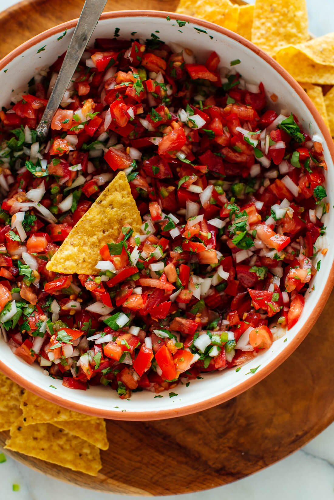

Pico de Gallo

A More Flavorful Take on Pico de Gallo
People love a good pico. Yet most pico recipes turn out bland, uninspired,
lacking the heart and soul and umph of a truly Mexican dish. Here's the
secret to an amazing pico: choosing a wider variety of flavorful fresh ingredients. Let's
get started!
Ingredients
- 1 of every color of bell pepper
- 4-5 jalapeno peppers
- 2 anaheim peppers
- 2 serrano peppers
- 1 poblano pepper
- Other delicious looking peppers you find at the store
- Hot pepper varieties, such as habanero (optional for more spice)
- 4 Texas sweet onions
- 1 bunch cilantro
- 1-2 lbs of the juiciest, freshest tomato variety you can find
- fresh limes
- Minced garlic
- Salt
- Corn tortilla chips (optional if this will be an appetizer)
Steps
- Remove tops and seeds of all peppers, then finely mince
- Finely mince onions, cilantro, and tomatoes
- Mix all cut up ingredients so far
- Add fresh lime juice, garlic, and salt to taste
- Chill for 30 minutes, then serve!